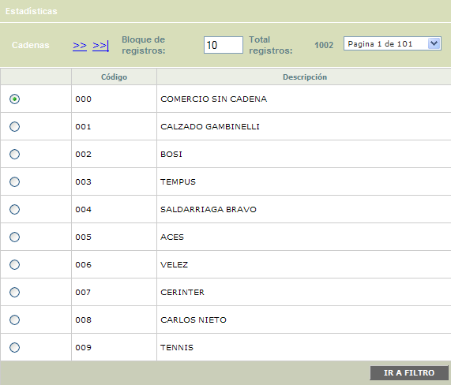
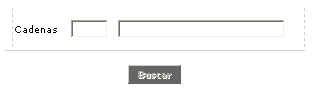
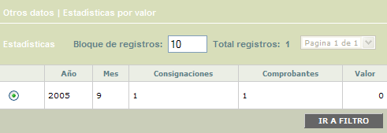
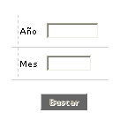
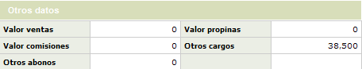
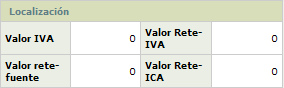

Estadística depósito por cadena
Mediante esta función la entidad conoce, mes a mes, el movimiento acumulado de los establecimientos afiliados, a partir de las diferentes cadenas en las que se encuentran agrupados.
Cadenas: Este primer formulario muestra la identificación correspondiente a las diferentes cadenas de comercio, definidas previamente por las franquicias. Este formulario cuanta con un filtro de búsqueda y la opción Estadísticas.

Código |
Despliega el código asignado a cada una de las cadenas de comercios. |
Descripción |
Contiene el nombre de la cadena asociada al código anterior. |
Filtro: Se pueden realizar consultas a través de la siguiente opción:

Cadenas |
El campo código es numérico de hasta 3 dígitos. El usuario también puede seleccionar la cadena invocando la lista de valores contenida en el campo. |
Estadísticas: Conjunto de campos que muestran información correspondiente al movimiento específico de la cadena de comercios en determinado período de tiempo; los datos desplegados pertenecen al registro sobre el cual se encuentra ubicado el cursor en el bloque anterior.
El formulario cuenta con un filtro para que el usuario pueda consultar las estadísticas para un año y/o mes en particular. Adicionalmente cuenta con la opción Otros datos.

Año |
Campo de salida en el que se muestra el año al cual hace referencia la información. |
Mes |
Muestra el mes correspondiente al periodo de tiempo asociado a la información presentada. |
Consignaciones |
Indica la cantidad de consignaciones realizadas por la cadena de comercios en determinado tiempo. |
Comprobantes |
Despliega la cantidad de comprobantes consignados por la cadena de comercios en determinado tiempo. |
Valor |
Señala el monto total equivalente a las consignaciones realizadas por la cadena de comercios en determinado período de tiempo. |
Filtro: Se pueden realizar consultas a través de la siguiente opción:

Año |
El campo año admite cualquier valor numérico de hasta 4 dígitos |
Mes |
El campo mes admite cualquier valor numérico de hasta 2 dígitos |
Otros datos: En este espacio se muestra información adicional y con mayor detalle, de la cadena de comercio correspondiente al registro sobre el cual se encuentra ubicado el cursor. Adicionalmente, se puede consultar la información de Localización a través del globo ubicado en la parte superior derecha.

Valor ventas |
Registra el valor total de las ventas de la cadena de comercios que se está consultando en determinado período de tiempo. |
Valor propinas |
Contiene el valor total de las propinas que recibió la cadena de comercios que se está consultando en determinado período de tiempo. |
Valor comisiones |
Presenta el valor total de las comisiones (porcentaje de descuento) practicadas a la cadena de comercios que se está consultando en determinado período de tiempo. |
Otros cargos |
Muestra el valor total de notas débito efectuados a la cadena de comercios que se está consultando en determinado período de tiempo. |
Otros abonos |
Contiene el valor total de notas crédito efectuados a la cadena de comercios que se está consultando en determinado período de tiempo. |
Información de Localización:

Valor iva |
Muestra el valor del impuesto de valor agregado (IVA) correspondiente al movimiento consignado por la cadena de establecimientos, por cada uno de los meses en que se hayan generado las estadísticas correspondientes. |
Valor reteiva |
Informa acerca del valor retenido a la cadena de establecimientos, y acumulado por cada mes, sobre el impuesto del valor agregado, acorde con la legislación vigente. |
Valor retefuente |
Despliega el valor total de la retención en la fuente practicada a la cadena de comercios que se está consultando en determinado período de tiempo. |
Valor reteica |
Si aplica, este campo señala el valor retenido por concepto del impuesto de industria y comercio (ICA), correspondiente al movimiento consignado por la cadena de establecimientos, mes a mes. |